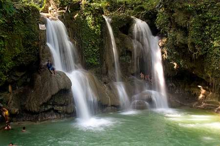
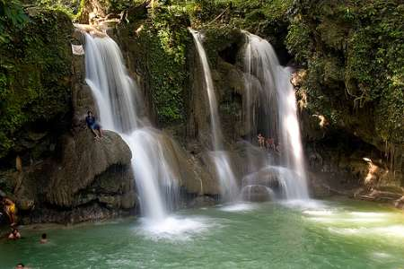

Tourist Spots in Visayas
Visayas
The Visayas or Visayan Island and locally known as kasay-an gid, is one of the three principal geographical divisions of the philippines, along with Mindanao and Luzon.
It consists of several islands, primarily sorrounding the Visayan Sea, although the Visayas are considered the northeast extremity of the entire Sulu Sea.
The peoples of the Visaya Island are known as the Visayans.
The major islands of the Visayas are Panay,Negros,Cebu,Bohol,Leyte, and Samar.
The region may also include the islands of Romblon and Masbate, whose population identify as Visayan.
Administratively, the Visayas is divided into 3 regions, namely Western Visayas, Central Visayas and Eastern Visayas.
The Visayas is composed of 16 provinces.
Western Visayas(Region VI)
Western Visayas consists of the islands of Panay and the Western half of Negros. The regional center is Iloilo City.
It's province are:
Aklan
Antique
Capiz
Guimaras
Iloilo
Negros Occidental
Boracay


Boracay Island (The Heart of Philippine Tourism) is one of the most popular tourist destinations in the country.
The island boasts a 4-kilometer stretch of white sand beach, considered to be the best beach in Asia and one of the top ten beaches in the world.
Bohol


Chocolate Hills are limestone hills that turn brown during the summer. Choctolate Hills are found in the island province of Bohol,
which is also the home of the one of the smallest primates in the world - the Philippine Tarsier.
Bohol's many other natural attractions such as the majestic lwahig River, Dagohoy Peak and virginal caves in the town of Danao,
as well as the beaches of Panglao island must not be missed.
Palawan


 

The province of Palawan is one of the most beautiful islands in the South China Sea.
Palawan has natural gas fields on the northeastern part of the island but the beautiful beaches around the island remain pristine.
The island is home to the spectacular Tubbataha Reef and the breathtakiong Puerto Princesa Subterranian Sea River National Park, both UNESCO World Heritage sites.